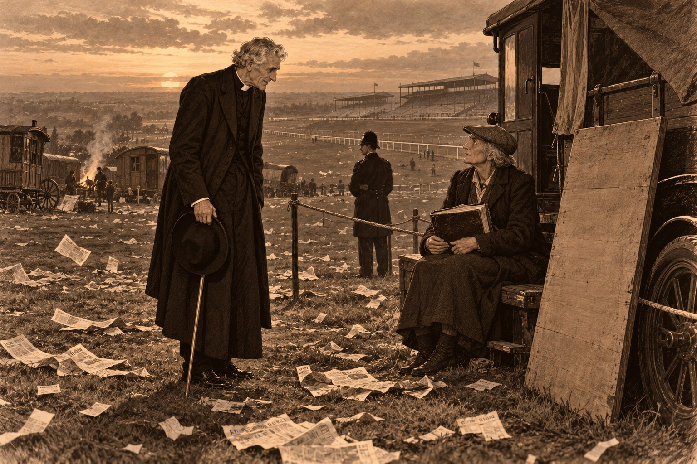

Аутсайдер

Билет 3 · 5 шиллингов · Диолайт · 11 к 4 · «конюх, кепка, говорит „наверняка“»
Проиграно.
О скачках в Сент-Гатлаке знали ровно столько, сколько положено знать в приходе, где лошадей держат для плуга, а не для славы. Знали, что есть на свете Дерби и что бегут его в начале июня на меловых холмах под Эпсомом, к югу от Лондона, и что в этот день вся Англия, от короля до трубочиста, ставит на одну лошадь, а выигрывает другая. Знали ещё, что старый Хаммонд в девяносто шестом году поставил полкроны на Персиммона, лошадь принца Уэльского, будущего короля Эдуарда, и выиграл, и что с тех пор прошло тридцать четыре года, а Хаммонд рассказывал об этом так, словно выиграл на прошлой неделе и деньги ещё не успел потратить.
Теперь Дерби можно было не только пересказывать, но и слушать. С того Рождества, когда новый хозяин «Плуга», мистер Бидуэлл, привёз из Питерборо приёмник с рупором, похожим на огромный граммофонный цветок, в трактире слышали всё: короля, который в январе открывал по радио Морскую конференцию, футбол, о котором здесь мало знали, и проповеди, которые викарий слушал с ревнивым вниманием, как один повар пробует суп другого. А уже четвёртый год Би-би-си передавала и Дерби: какой-то человек с очень быстрым языком стоял где-то на трибуне и рассказывал всей стране, что он видит.
В среду, четвёртого июня 1930 года, сразу после обеда, преподобный Эмброуз Морс надел шляпу, взял трость и сказал жене, что пойдёт в «Плуг» посмотреть на радио.
— Посмотреть на радио, — повторила Агнес, не поднимая головы от гороха, который лущила. — Это что-то новое. Раньше ты ходил туда посмотреть на пиво.
— Радио интереснее, — сказал викарий. — Оно не кончается.
Она ничего не ответила, но он знал, что она поняла, зачем он идёт, и что она поняла это раньше, чем он сам. На каминной полке, рядом с часами, третью неделю стояло письмо Сирила, и Агнес каждое утро передвигала его на полдюйма, словно от этого оно могло сказать что-нибудь ещё.
Сирилу было двадцать лет. Три года он проплавал юнгой и матросом на старом пароходе, ходившем в Балтику и на Белое море за лесом, а прошлой осенью вернулся, широкий в плечах и неразговорчивый, и нанялся шофёром к мистеру Огастесу Плейделлу. О мистере Плейделле в доме викария знали три вещи. Он нажил большие деньги на граммофонных пластинках, когда вся Англия танцевала и ей нужно было под что-то танцевать. Он держал трёх скаковых лошадей у тренера в Ньюмаркете и жил в большом новом доме под Чевели, в трёх милях от Ньюмаркета — города, где лошадей, как говорил Сирил, больше, чем людей, и где с ними разговаривают вежливее. И он звал Сирила Адмиралом — за море и за то, что тот держал руль, как штурвал.
Письмо было короткое, как все письма Сирила, и написано не про погоду. Это викарий отметил сразу и не знал, радоваться или нет. Сирил писал, что хозяин везёт его на Дерби, что они выедут во вторник, будут жить в Эпсоме до пятницы, потому что в пятницу бежит его кобыла, и что он, Сирил, «увидит короля и Ага-хана». Дальше шло: «Хозяин говорит, у Ага-хана в Дерби две лошади, и все ставят на одну, а он думает, что выиграет другая, только сам на неё не поставит, потому что он суеверный. А я не суеверный». Подписано было: «Ваш сын С. Морс», и ниже, мелко, как приписывают на открытках: «Пами привет».
В «Плуге» было тесно и накурено. Мистер Бидуэлл, круглый, усатый, в жилете с часовой цепочкой, вертел ручки приёмника с таким лицом, с каким органист берёт трудный аккорд. У камина, где огня в июне не разводили, сидел старый Хаммонд. Он был старше всех в приходе, он давно уже не был церковным старостой и почти не ходил, но на Дерби его привели под руки два внука, и он сидел с кружкой, прямой и торжественный, как на освящении памятника. Было ещё человек пятнадцать: фермеры, работники с мельницы, кузнец, двое мальчишек, которых никто не прогонял, потому что все слушали и прогонять было некому.
— Преподобный, — сказал Бидуэлл. — Вы на кого?
— Я ни на кого, — сказал викарий. — Я слушаю.
— Слушать на Дерби, ни на кого не поставив, всё равно что слушать проповедь, не веря в Бога, — сказал Хаммонд, и все засмеялись, потому что Хаммонд редко шутил, а когда шутил, то шутил о Боге.
Викарий взял свою кружку, оловянную, с вмятиной, ту самую, которую одиннадцать лет назад снял с гвоздя, вытер рукавом и с тех пор держал при себе, и сел у окна.
Радио трещало и пело. Сначала долго играл оркестр, и человек с быстрым языком рассказывал о толпе: что народу на холмах больше, чем было в прошлом году, что люди съезжались с ночи, что шарабаны стоят вдоль дорог от самого Мордена, что погода серая и холодная и половина Англии пришла в макинтошах, потому что ждала дождя. Потом голос стал торжественным и объявил, что приехали король и королева. В «Плуге» встали. Встал и викарий, и Хаммонд, которого подняли внуки, и мальчишки, которые не знали, зачем встают, но встали вслед за всеми. Потом сели и стали слушать дальше.
Так викарий узнал об Ага-хане больше, чем знал из газет. Голос рассказал, что Ага-хан — духовный глава многих миллионов мусульман-исмаилитов, рассеянных от Индии до Африки, человек, которого его единоверцы почитают как живого имама, а в Англии он за десять лет стал одним из первых владельцев скаковых конюшен. Сегодня у него в Дерби две лошади. Одна — Растом-паша, на которого ставят, вторая — Бленхейм, на которого не ставит почти никто. Фаворит же скачки — Диолайт, победитель «Двух тысяч гиней», большой весенней скачки в Ньюмаркете, и за него дают одиннадцать к четырём.
— Диолайт, — сказал Бидуэлл, хлопнув ладонью по стойке. — У меня на него шиллинг. Брат прислал из Ноттингема.
— Бленхейм, — сказал Хаммонд, не открывая глаз. — Тысяча семьсот четвёртый год. Мальборо разбил французов. Мой прадед там был.
— Ваш прадед там не был, — сказал кузнец. — Это двести с лишком лет назад.
— Значит, был прадед прадеда, — сказал Хаммонд. — Кто-то из нас там был. Хаммонды всегда где-нибудь были.
Викарий ничего не сказал. Он смотрел в окно на дорогу, которая уходила к Стамфорду прямо, как линейка, и думал о том, что знает, на кого поставил Сирил. Сирил всегда ставил на тех, на кого не ставит никто. Так он поставил четыре года назад, в Линкольне, на Колорадо против фаворита, так он, наверное, ставил и в портах, где об этом не писали домой. Это было в нём что-то от капитана Кука, которого он любил с двенадцати лет: желание плыть туда, где на карте ещё пусто.
Потом лошади пошли.
Человек в радио говорил так быстро, что половину слов глотал, и в «Плуге» тоже глотали воздух вслед за ним. Растом-паша повёл. Растом-паша первым вошёл в поворот. «Таттенем-Корнер», — сказал голос, и викарий потом узнал, что так называется знаменитый поворот на холме, после которого лошади выходят на прямую к трибунам. Растом-паша выдохся. Вперёд вышел Диолайт, и Бидуэлл издал звук, какого от него в приходе не слышали никогда. А потом голос вдруг сорвался, взлетел на октаву и закричал одно слово, и это слово было «Бленхейм».
Секунду в «Плуге» было тихо. Потом все заговорили разом. Бидуэлл снял с цепочки часы и посмотрел на них, словно они были виноваты. Кузнец хохотал. Мальчишки ничего не поняли, но тоже закричали. Хаммонд открыл глаза, поднял кружку и сказал на весь трактир:
— Говорил я вам. Хаммонды там были.
Викарий смеялся вместе со всеми. Он смеялся долго и от души, потому что ему было смешно и потому что он знал, что Сирил сейчас стоит где-то на холмах среди полумиллиона людей и не верит своим ушам. Голос в радио, успокоившись, говорил, что Бленхейма вёл молодой жокей Гарри Рэгг, который придержал его до последнего фарлонга — восьмой доли мили —, а потом выпустил, как стрелу из лука; что за Бленхейма давали восемнадцать к одному; что сам Ага-хан спустился с трибуны и ведёт коня в загон, и толпа расступается перед ним, как море. Человек в радио так и сказал: «как море», — и викарий подумал, что Сирилу это понравилось бы.
Потом он перестал смеяться.
Он и сам не сразу понял, отчего. В трактире ещё шумели, Бидуэлл ставил всем по полпинты за счёт заведения, потому что проиграл и хотел, чтобы это было хоть кому-то в радость. А викарий сидел с кружкой у окна и вспоминал Джоэла Тиббета, арендатора с Восточной фермы, который в девяносто девятом году выиграл на скачках в Линкольне сорок фунтов и шесть лет потом ездил туда выигрывать снова, пока не продал сначала лошадь, потом плуг, потом аренду. Викарий его хоронил. На отпевании было четыре человека, и Тиббет лежал в гробу с таким лицом, будто ждал, что объявят результат следующего заезда. Человек, которому раз повезло, говорил тогда себе молодой викарий, всю жизнь ищет второй раз, как пьяница ищет первую рюмку. И если бы Тиббет проиграл в девяносто девятом свои десять шиллингов, он прожил бы на Восточной ферме до старости.
Он допил, поблагодарил Бидуэлла и пошёл домой.
Вечер был серый и тихий, без ветра. Над Фенами, плоскими, как стол, на котором разложили карту, стояли низкие облака, и в канавах вдоль дороги неподвижно лежала вода, отражавшая их так точно, что казалось, будто облака лежат и внизу. У калитки ждал Ферокс, молодой мастиф цвета мокрого песка. Он не умел ждать спокойно, поэтому ждал всем телом. Агнес стояла в дверях кухни, вытирая руки о фартук.
— Ну? — сказала она.
— Бленхейм, — сказал викарий.
— Это которая?
— Та, на которую никто не ставил. Восемнадцать к одному.
Агнес помолчала. Потом спросила о том, чего он и ждал:
— Он поставил?
— Ты же его знаешь. Он всегда ставит против всех.
Она посмотрела на письмо на каминной полке, потом снова на мужа, и он увидел на её лице то, что видел только раз или два за тридцать пять лет, — страх, который она держала при себе.
— Тогда надо было молиться, чтобы он проиграл, — сказала она.
— Поздно, — сказал викарий. — Он уже выиграл.
В кабинете, на старом сундуке в углу, спал Пами. Он был так стар, что Агнес перестала считать его годы, и почти никогда больше не спускался вниз, но, когда викарий сел к столу, приоткрыл один голубой глаз, словно хотел спросить, чем кончилось. Викарий сказал ему: «Бленхейм», — и Пами закрыл глаз, удовлетворённый. Коты, как известно, ни на кого не ставят и потому всегда выигрывают.
⁂
Билет 41 · 1 фунт · Растом-паша · 15 к 2 · «джентльмен, гвоздика, просил имени не писать»
Проиграно.
Телеграмма пришла в четверг, в половине одиннадцатого утра. Её привёз на велосипеде из Стамфорда почтовый мальчик в фуражке с медным значком, и привёз так быстро, что на щеках у него было написано, что он знает, о чём она.
Викарий был в саду у ульев. Пчёлы в начале июня работали так, словно их нанял приход, и он стоял над рамочным ульем, белым, похожим на маленький дом, который двадцать два года назад прислал ему с Даунса человек, слышавший пчёл хуже его самого. Агнес расписалась за телеграмму, вскрыла её, потому что в этом доме телеграммы вскрывала она, прочла и пошла в сад. Шла она не быстро и не медленно, а так, как ходят на похоронах те, кто их устраивает.
Телеграмма была длинная, длиннее, чем принято, словно человек, который её посылал, не привык считать слова. Викарий прочёл её дважды:
«ПРЕПОДОБНОМУ МОРСУ СЕНТ-ГАТЛАК СТАМФОРД ВАШ СЫН СИРИЛ ЗАДЕРЖАН ПОЛИЦИЕЙ ЭПСОМ УБИЙСТВО БУКМЕКЕРА ПРОСИЛ ПЕРЕДАТЬ ДОСЛОВНО НЕ УБИВАЛ НЕ ГОВОРИТЕ МАМЕ СТРЯПЧИЙ ЗАВТРА ГОСТИНИЦА КИНГС-ХЕД ПЛЕЙДЕЛЛ»
— Не говорите маме, — сказала Агнес. — Он всегда был хорошим мальчиком.
Она сказала это ровно, без слёз, тем голосом, каким говорила о погоде и о ценах на уголь, и викарий услышал в нём то, чего не услышал бы никто другой: она держала свой голос, как держат на весу полное ведро, чтобы не расплескать.
Она пошла в дом и стала собирать чемодан. Собирала она молча, и викарий, стоя в дверях спальни, смотрел, как она кладёт его рубашки, бритву, колхикум от подагры в коричневом пузырьке, Новый Завет и, подумав, вторую пару носков. Потом она закрыла чемодан, затянула ремни, выпрямилась и сказала то одно слово, которое собиралась сказать с самого сада:
— Привези.
В Стамфорде он успел на поезд до Питерборо, в Питерборо — на лондонский экспресс. Нога ныла, как ноет старая собака, когда ей не дают лечь: не громко, но всё время. Он сидел у окна, положив правую ногу на скамью напротив, и пожилой джентльмен с газетой, которому эта нога мешала, посмотрел на воротничок викария и ничего не сказал. Англичанин многое простит человеку в воротничке, даже ногу на своей скамье.
За окном уходили назад Фены, потом пошли холмы, потом кирпичные городки с трубами и бельём на верёвках, и всё это время викарий думал не о сыне и не об убийстве, а о том, что у него в голове одна фраза из телеграммы стучит в такт колёсам, как стучат в такт колёсам глупые песенки: «не убивал, не говорите маме, не убивал, не говорите маме». Он понял, почему она стучит. В ней была правда. Он не слышал голоса Сирила, но слышал его в этих четырёх словах. Человек, который убил, сказал бы иначе: «я невиновен» или «это ошибка». «Не убивал» говорит человек, которого обвинили в том, чего он не делал, и ему некогда подбирать слова.
На Кингс-Кроссе, у газетного киоска, он купил вечернюю газету, потому что её продавали прямо у вагона и потому что на первой странице был Ага-хан. Ага-хан стоял на фотографии рядом с гнедой лошадью, у которой на лбу была белая звёздочка, и держал её под уздцы: полный смуглый человек в сером цилиндре, с круглым лицом, и улыбался. Под фотографией было сказано, что Бленхейм — первое Дерби Ага-хана и что король лично его поздравил.
А в самом низу страницы, в узком столбце, где обычно печатают о пожарах и сбежавших коровах, было написано: «Убийство на холмах». Дальше в шести строках сообщалось, что утром в четверг в фургоне на Эпсом-Даунс найден мёртвым известный букмекер Эдвард Блай по прозвищу Тед, что смерть наступила от ножевой раны и что полиция задержала молодого шофёра из Ньюмаркета, у которого при себе оказалась крупная сумма денег.
Викарий прочёл это стоя, у самого вагона, и носильщик, который ждал его чемодан, тоже стоял и ждал, пока он прочтёт. Викарий читал много газет за свою жизнь и много раз читал в них о своём приходе, о Дойле, о сквайре Хэтерли. Но о сыне он читал в газете впервые. Это было странное чувство, и он потом долго пытался его назвать. Похоже было на то, как видишь своё лицо на чужой фотографии: всё как будто правильно, и всё не то.
Он сложил газету вчетверо, положил во внутренний карман и сказал носильщику: «Ватерлоо, пожалуйста», — и носильщик, хотя до Ватерлоо надо было ехать подземкой и нести туда чемодан он не был обязан, донёс его до самой подземки, потому что видел, как викарий читал.
В Эпсом он приехал в восьмом часу вечера. Город был похож на праздничный стол на следующее утро. Вдоль главной улицы ещё висели флажки, под ними ветер гонял обрывки газет и программок скачек, у часовой башни на рыночной площади два дворника сметали в кучу апельсиновые корки, пробки и обрывки билетов, и над всем этим стоял тот особый запах, какой бывает в городе, через который вчера прошли полмиллиона человек: лошади, пиво, бензин и ещё что-то, что викарий назвал бы усталостью, если бы у усталости был запах.
Полицейский участок стоял на Эшли-роуд, недалеко от станции. Это было кирпичное здание с синим фонарём над дверью, и викарий, подходя к нему, вспомнил, что одиннадцать лет назад, в девятнадцатом году, этот участок разнесли канадские солдаты, ждавшие отправки домой, и в той драке погиб пожилой сержант. Об этом много писали тогда, и викарий, прочитав, молился за сержанта в Сент-Гатлаке, хотя никогда его не видел. Он подумал, что всякая дверь, в которую входишь в первый раз, уже успела кого-то проводить.
Эпсом лежал в графстве Суррей, но полиция была здесь не суррейская, а лондонская. Ещё в прошлом веке его вписали в Столичный полицейский округ, и констебли в высоких синих шлемах стояли на эпсомских улицах так же, как на Стрэнде или на Пикадилли. Дежурный сержант, рыжеватый и вежливый, выслушал викария, посмотрел на воротничок, на трость, на ногу, потом на чемодан, и сказал, что сейчас позовёт детектив-инспектора. Детектив-инспектором в английской полиции зовут офицера уголовного отдела, того, что ходит в штатском и ведёт дела, а не стоит на перекрёстке.
Детектив-инспектор Пайпер оказался невысоким сухим человеком в коричневом костюме, с лицом, на котором всё было мелким и точным, как на часах: маленькие внимательные глаза, короткие усы, тонкие губы. Он говорил с тем лондонским выговором, в котором гласные будто нарочно проглатывают, чтобы быстрее дойти до сути, и всё время держал во рту мятную лепёшку, перекатывая её из-за одной щеки за другую.
— Морс, — сказал он, глядя в бумагу. — Сирил Морс, двадцать лет, шофёр мистера Плейделла из Чевели. Ваш?
— Мой.
— Садитесь, преподобный. Нога?
— Подагра.
— Сочувствую. У моего отца была. Он говорил, это когда большой палец знает о тебе больше, чем ты сам. — Пайпер сел напротив и положил руки на стол, ладонями вниз. — Я вам скажу то, что могу сказать, а вы меня не перебивайте, потому что я скажу это один раз, а потом вы будете задавать вопросы, и я, может быть, на них отвечу.
Викарий кивнул.
— Вчера на холмах, — сказал Пайпер, — ваш сын поставил двадцать фунтов на Бленхейма у букмекера по имени Тед Блай. Тед Блай стоял на холмах тридцать лет, на одном месте у поворота, и на доске у него было написано: «Платит всегда». И он заплатил. Вчера, когда пришёл Бленхейм, половина мелкой сволочи на холмах свернула свои доски и дала дёру, а Тед стоял и платил. Вашему сыну он заплатил последнему, триста восемьдесят фунтов. Вечером ваш сын пришёл к его фургону с бутылкой; соседи по холму видели, как он уходил, в половине одиннадцатого. Утром Теда нашли в фургоне. Один удар, под рёбра. Нож под столиком. Сумка разрезана, пустая. Нож — вашего сына. Он сам это сказал, как только увидел, раньше, чем я спросил. Деньги — у него в куртке, все триста восемьдесят, мы их пересчитали. — Пайпер перекатил лепёшку. — Вот и всё, преподобный. Двадцать лет я езжу на скачки, и каждый год в день Дерби на холмах полмиллиона человек, и каждый второй — свидетель, а каждый первый — подозреваемый. А тут свидетель один, подозреваемый один, и нож один. Я бы на вашем месте тоже не поверил. Но я на своём.
— Вы ставите? — спросил викарий.
Пайпер посмотрел на него с удивлением, словно его спросили, не носит ли он корсет.
— Нет, — сказал он. — Ни пенни, ни разу. Я видел, чем это кончается.
Викарий слушал его голос и не слышал в нём ни одной фальшивой ноты. Пайпер говорил правду. Он говорил её сухо и без удовольствия, как говорит правду человек, который хорошо знает свою работу и не любит её, и это было хуже, чем если бы он лгал.
— Можно мне к нему? — спросил викарий.
— Десять минут, — сказал Пайпер. — При дежурном. И, преподобный… — Он помолчал. — Он ничего не отрицает. Ни ставки, ни ножа, ни фургона. Отрицает только одно. Знаете, это у нас редко бывает. Обычно отрицают всё, кроме одного.
⁂
Билет 212 · 20 фунтов · Бленхейм · 18 к 1 · «Кап. Кук, шофёр из Ньюмаркета, свой»
Тед отговаривал.
Камера была маленькая и чистая, с побелёнными стенами и окном под потолком, в котором было видно кусок неба и кусок водосточной трубы. Сирил сидел на нарах в рубашке без воротничка и в жилете; шофёрскую куртку у него забрали вместе с деньгами. Когда дверь открылась, он встал, как вставал на пароходе, когда в кубрик входил помощник капитана, и, увидев отца, не изменился в лице, а только сказал:
— Ты приехал.
— Твой хозяин прислал телеграмму.
— Я просил не говорить маме.
— Мама её и вскрыла.
— Она всегда вскрывает, — сказал Сирил, и в углу его рта мелькнуло что-то, похожее на улыбку, и тут же пропало.
Дежурный констебль, пожилой и грузный, поставил викарию табурет, а сам встал у двери и уставился в стену с тем выражением, с каким полицейские умеют не слышать того, что слушают. Викарий сел, положил трость на колени и посмотрел на сына.
За восемь месяцев, что они не виделись, Сирил ещё раздался в плечах. Лицо у него было обветренное, как у всех, кто долго смотрел на воду, а руки — шофёрские, с въевшимся в складки маслом, которое не отмывается ни мылом, ни песком. Теперь он был на полголовы выше отца. Викарий подумал, что сыновья вырастают не тогда, когда перерастают отцов, а тогда, когда отцы впервые замечают, что смотрят на них снизу.
— Расскажи, — сказал он.
Сирил рассказал. Он рассказывал так, как, наверное, докладывал вахтенному: по порядку, коротко, ничего не пропуская и ничего от себя не прибавляя. Викарий слушал не столько слова, сколько голос, и голос был ровный, низкий, чужой и всё-таки свой, как бывает свой голос у человека, который вернулся из долгого плавания.
Они с хозяином приехали во вторник. Ехали через Лондон, девяносто миль, и хозяин всю дорогу требовал гнать, а Сирил не гнал, потому что по закону больше двадцати миль в час нельзя, а на мосту через Темзу стоял констебль с секундомером. Хозяин поселился в «Кингс-Хеде», а Сирилу отвели каморку над гаражом. В среду утром они выехали на холмы в восемь часов и всё равно час стояли в пробке за Юэллом, и хозяин говорил, что опоздает к скачке, хотя до неё оставалось шесть часов. На холмах машины ставили вдоль ограды, рядами, как баржи у причала. Хозяин ушёл на трибуну, где стоят те, у кого есть в кармане значок клуба, а Сирилу велел ждать у машины до последнего заезда и не пить.
— Я и не пил, — сказал Сирил. — До вечера.
Он ушёл бродить по холмам. Холмы в день Дерби — это целый город, сказал он, город на один день: палатки, фургоны, качели, будки, где за пенни стреляют по кокосам, а за шесть пенсов предсказывают судьбу, оркестры, проповедники, торговцы угрями и мороженым, автобусы с открытым верхом, на которых сидят целые конторы в соломенных шляпах, и цыганские фургоны, расписные, с лошадьми, привязанными к колёсам. И букмекеры. Их там сотни, у каждого ящик, на который он становится, и доска с именем, и все кричат цены, как на рынке.
— Я видел тотализатор, — сказал Сирил. — Его в этом году первый раз поставили на Дерби. Будки, окошки, ты даёшь деньги, тебе дают бумажку, а наверху на доске цифры сами меняются. Мне не понравилось.
— Почему?
Сирил подумал.
— Машина тебя в лицо не знает, — сказал он. — Ей всё равно, кто ты. А Тед меня знал.
Теда Блая он знал с прошлой осени, с ньюмаркетских скачек: Тед стоял там у ограды со своим ящиком, а Сирил ждал хозяина и подошёл поглядеть. Тед был толстый, громкий, в котелке, с сигарой, которую никогда не зажигал, и голосом, как у пароходного гудка. На доске у него было написано: «ТЕД БЛАЙ · ПЛАТИТ ВСЕГДА». Это была правда, сказал Сирил, его все на холмах знали: Тед платил всегда. Рядом с ним на складном стуле сидела его жена с толстой книгой на коленях и записывала каждую ставку.
— Он меня звал Капитаном, — сказал Сирил. — Я у него записывался «Капитаном Куком». Как тогда, в Линкольне.
Викарий промолчал.
В полдень Тед позвал его к своему ящику поесть: у жены Теда был с собой пирог с мясом, а ножа не оказалось, и Сирил разрезал пирог своим. Тем самым, который отец купил ему в Стамфорде четыре года назад, в мае, когда он уходил в море, — складным, со свайкой.
— Свайка — это такой шип, — сказал Сирил констеблю у двери, который уставился на него, хотя должен был смотреть в стену. — Узлы распутывать.
Пирог он разрезал, нож положил на ящик и забыл. Вспомнил о нём только вечером, а потом уже было не до ножа.
На кого ставить, он решил ещё в апреле. Хозяин говорил, что у Ага-хана две лошади и выиграет та, на которую не ставят: Растом-паша — лошадь конюшни, на нём едет первый жокей, а Бленхейм — так, второй. Хозяин в это верил, но сам ставил на Диолайта. А Сирил не был суеверен. Он поставил на Бленхейма двадцать фунтов.
— Двадцать фунтов, — повторил викарий.
— Это мои деньги. С парохода. Я три года копил.
— Все?
— Почти.
Викарий не услышал в этом ничего, кроме правды, и это его не обрадовало.
Тед, принимая ставку, посмотрел на Сирила поверх ящика и сказал: «Не надо, Капитан. Двадцать фунтов на второго номера — это не ставка, это подарок мне». Сирил сказал, что знает, что делает. Тед пожал плечами и велел жене записать, а потом добавил: «Запиши ещё, что я отговаривал».
Скачку Сирил смотрел с холма у поворота, оттуда, где холм выходит к самой дорожке. Лошадей было видно секунд десять, сказал он, не больше: пошли, прогремели, исчезли. Но этих десяти секунд ему хватило, чтобы увидеть зелёный с шоколадным камзол — это цвета Ага-хана, объяснил он отцу; только таких камзолов было два, и который из них Бленхейм, Сирил не знал, — шедший не первым и не вторым. Остальное он услышал. Холмы закричали так, как кричит море, когда налетает на камни. Потом кто-то рядом сказал «Бленхейм», и потом его сказали все.
А потом началось то, о чём Сирил рассказывал быстрее и глуше, чем обо всём остальном.
На холмах стоят не только честные букмекеры. Есть и такие, кто приезжает на один день с доской, на которой написано чужое имя, берёт деньги у всех, а если выигрывает аутсайдер, сворачивает доску и бежит, — их на скачках зовут «уэлшерами», и прозвище это так старо, что никто не помнит, откуда оно. Когда пришёл Бленхейм, их на холмах побежало сразу пять или шесть. Один из них стоял через два ящика от Теда, в цилиндре и с доской «Дж. Кеннет, Лондон». Он схватил сумку и нырнул в толпу. И Тед Блай, стоя на своём ящике, закричал на весь холм своим пароходным голосом: «Держи уэлшера!»
— И мы его держали, — сказал Сирил.
Они догнали Кеннета у цыганских фургонов. Он пытался залезть под фургон, а его вытащили за ноги. Цилиндр с него слетел, сумку сорвали, деньги из неё делили тут же, на траве, кто сколько у него поставил, и Сирил не взял ни пенни, потому что у Кеннета не ставил. Кеннета били. Сирил сказал это прямо, не опуская глаз.
— Ты тоже? — спросил викарий.
— Тоже. Он взял у людей деньги и побежал. У него на холме было человек сто таких, кто ставил по шиллингу. Он заслужил.
Викарий слушал и ждал. Он ждал той ноты, которую слышал четыре года назад в камере в Линкольне, когда сын в первый раз солгал ему всерьёз, той чуть более высокой, чуть более чистой ноты, которая бывает у человека, когда ему стыдно. Ноты не было. Сирил говорил правду, и ему не было стыдно. И викарий подумал, что лучше бы сын солгал.
Кеннета бросили у фургонов, и он уполз под колёса, а цыгане его не выдали. Потом Сирил вернулся к Теду, и у Теда была очередь. Тед платил. Он платил, когда вокруг сворачивались доски, и толпа, увидев, что он платит, кричала ему «ура», как кричат на флоте адмиралу. А потом в сумке кончились деньги. Тед посмотрел в сумку, посмотрел на очередь, в которой оставалось человек семь, и сказал: «Минуту, джентльмены». Слез с ящика и ушёл в фургон, который стоял тут же, за ящиком. Жена пошла за ним. Сирил слышал из фургона только голос Теда — громкий, весёлый, как будто тот считал не последние деньги, а сдачу. Потом Тед вернулся с пачкой денег в руке, и жена вернулась тоже, села на свой стул, открыла книгу и стала ставить кресты. Лицо у неё было такое, сказал Сирил, как у кочегара, которому сказали, что котёл сейчас рванёт, а уходить нельзя.
Сирил был в очереди последним. Тед отсчитал ему триста восемьдесят фунтов вслух, бумажками по пять, и, отдавая последнюю, сказал — Сирил запомнил дословно:
«Тебе повезло, Капитан. Хуже этого с тобой ничего в жизни не случится. Больше не ставь».
— Я засмеялся, — сказал Сирил. — Я думал, он шутит.
— А он?
— Он не смеялся.
Вечером, пока хозяин ещё не вернулся с трибуны, на стоянке для членов клуба, где стояли дорогие машины, была давка. Чей-то тёмный лимузин не мог выехать, потому что сбоку его подпирал «Даймлер» хозяина. Сирил отогнал «Даймлер», и лимузин проехал мимо, и человек на заднем сиденье — Сирил узнал его по фотографиям, которые на холмах продавали за пенни, — кивнул ему и приподнял шляпу.
— Ага-хан, — сказал Сирил. — Он мне кивнул.
Он сказал это просто, и викарий не услышал в этом ничего, кроме правды.
В десятом часу Сирил купил в пабе бутылку виски и пошёл на холмы к фургону Теда. Он хотел поблагодарить. Тед был один, пьяный, весёлый, в рубашке, и пел «Дейзи, Дейзи» так, что, наверное, было слышно в Лондоне. Жены не было: она ушла ночевать к сестре в Юэлл, сказал Тед, она всегда уходит к сестре, когда он поёт. Они выпили по глотку. Тед ещё раз сказал «не ставь больше», и ещё раз сказал «тебе повезло, Капитан, хуже не бывает», и Сирил ушёл в половине одиннадцатого. Ножа в фургоне он не видел. Ночевал в машине хозяина во дворе «Кингс-Хеда», потому что в каморке было душно. Утром к машине пришли двое в штатском и констебль.
— Ты его убил? — спросил викарий.
— Нет, — сказал Сирил.
Это была правда.
— Деньги?
— Мои. Я их выиграл.
Это тоже была правда. Всё, что говорил сын, было правдой: и про нож, и про пирог, и про Ага-хана, и про Кеннета, которого он бил. И викарий сидел на табурете в чистой камере с куском неба в окне и думал, что давно не слышал рассказа страшнее, хотя в нём не было ни одного слова неправды.
— Время, преподобный, — сказал констебль у двери.
Викарий встал. Сирил тоже встал.
— Ты веришь? — спросил он.
— Верю, — сказал викарий. — Я слышу.
Сирил кивнул, как кивнул ему Ага-хан. Викарию показалось, что сын хотел сказать ещё что-то, но не сказал.
В коридоре Пайпер стоял у окна и смотрел на темнеющую улицу.
— Ну? — сказал он, не оборачиваясь.
— Он не убивал, — сказал викарий.
— Это я слышу от отцов каждую неделю.
— Возможно. Но я отец, который слышит.
Пайпер обернулся и посмотрел на него внимательно, с тем выражением, с каким смотрят на лошадь, о которой в программке ничего не сказано.
— Завтра утром, — сказал он, — фургон опечатаем и увезём. Если хотите посмотреть, где это было, идите сегодня. Констебль Ходж там до полуночи. Скажете, что от меня. — Он помолчал и добавил, как бы нехотя: — Миссис Блай тоже там. Она не уходит. Сидит на ступеньке с книгой.
⁂
Билет 198 · 2 шиллинга · Бленхейм · 18 к 1 · «старуха с корзиной, ставит на имена»
Уплачено: 1 фунт 18 шиллингов.
На холмы его отвёз таксомотор, старый и дребезжащий, с шофёром, который за полторы мили успел рассказать, что на Дерби он заработал за один день больше, чем за весь май, что на Бленхейма не ставил, потому что не любит лошадей, названных в честь сражений, и что Тед Блай был «последний честный человек на этих холмах, а таких, преподобный, всегда режут первыми». Викарий слушал и думал, что таксисты похожи на хор: каждый поёт своё, но вместе выходит то, что думает весь город.
Таксомотор остановился там, где кончалась дорога. Дальше были холмы.
Викарий никогда не видел их прежде и теперь понял, почему Сирил назвал их городом на один день. Это и был город, только жители его уехали, а улицы остались. До самого горизонта, мягко поднимаясь и опускаясь, тянулась зелёная трава, вытоптанная до земли там, где вчера стояли люди, и вся она была усыпана бумагой: билетами, программками, газетами, обёртками, — так густо, как усыпан снегом склон в феврале. Ветер с запада гнал эту бумагу волнами, и она шуршала, будто холмы переговаривались вполголоса. Далеко справа, над белой оградой дорожки, стояла пустая трибуна, длинная и тёмная, как корабль, вытащенный на берег. Ближе виднелись дощатые будки тотализатора с закрытыми окошками. А слева, в низине, где холм спускался к рощице, стояли цыганские фургоны, красные и зелёные, с высокими колёсами, и над одним поднимался дымок костра, прямой, пока его не находил ветер.
Викарий шёл по холму медленно, опираясь на трость, и бумага шуршала у него под ногами. Он поднял один билет. На нём стояло имя букмекера, которого он не знал, номер и сумма — полкроны. Чей-то вчерашний день, подумал он. Чья-то полкроны, чья-то жена, которой не скажут. Он положил билет обратно на траву, потому что не знал, что ещё с ним сделать.
Фургон Блаев стоял у поворота, на склоне, откуда видно было и дорожку, и трибуну, и весь холм. Это был старый автомобильный фургон с тентом, тёмно-зелёный, с облупившимися буквами на борту, и вокруг него на кольях была натянута верёвка. У верёвки стоял высокий молодой констебль в синем шлеме, а на ступеньке фургона, позади верёвки, сидела женщина с книгой на коленях.
Констебль, услышав имя Пайпера, приложил руку к шлему и приподнял верёвку. Женщина не подняла головы.
Ей было, вероятно, столько же лет, сколько Агнес, но выглядела она иначе: Агнес от жизни окрепла, а эта высохла, как доска на ветру. Она была маленькая, жилистая, в длинном тёмном пальто и в мужской суконной кепке, из-под которой выбивались седые волосы, подстриженные коротко, будто их стригли не для красоты, а чтобы не мешали. Пальцы правой руки у неё были в чернилах, въевшихся в кожу так же, как у Сирила въелось масло. Книга на коленях была толстая, в чёрном коленкоре, потрёпанная по углам до картона.
К колесу фургона была прислонена доска, белая, с чёрными буквами: «ТЕД БЛАЙ · ПЛАТИТ ВСЕГДА».
— Миссис Блай, — сказал викарий. — Я пришёл не мешать. Меня зовут Морс, я священник.
Она подняла глаза. Глаза были светлые, холодные и очень усталые.
— Тед в церкви был последний раз, когда мы с ним венчались, — сказала она. — Двадцать четыре года назад. В Ламбете. Священник ему теперь ни к чему.
— Я не к нему, — сказал викарий. — Я к вам.
Она посмотрела на него с чем-то похожим на любопытство, потом подвинулась на ступеньке, сама не зная зачем. Викарий остался стоять.
Он не сказал ей, что он отец того мальчика. Он думал об этом всю дорогу на холм и решил, что не скажет, пока она не спросит. Ему не нравилось это решение. Он никогда не лгал, но знал, что умолчание лжи сродни. Он оправдал себя тем, что женщина, у которой прошлой ночью убили мужа, имеет право не смотреть в глаза отцу того, кого за это держат в камере. Но оправдание было шаткое, и он это знал.
— Вы давно с ним на холмах? — спросил он.
— С самой свадьбы. Я веду книгу. — Она положила ладонь на коленкор так, как кладут руку на голову собаке. — Каждую ставку. Номер, сколько, на кого, почём. И кто ставил — не имя, имён тут не говорят, а какой человек. Чтобы, когда придёт за деньгами, знать, тот ли. Двадцать четыре года, ни одной ошибки. Тед на ящике кричит, я пишу.
— И он платил всегда.
— Тед платил всегда, — сказала она. — Это у него на доске написано. Тридцать лет написано. Ни одного билета не зажал, ни одного раза не сбежал. Вчера половина этих… — она махнула рукой в сторону холма, — свернулась и дёрнула. А Тед стоял. Вы бы видели, как ему кричали. Как королю.
Голос её на первых словах вдруг выпрямился, как выпрямляется старуха, когда при ней хвалят её сына. Викарий слушал и слышал в этих словах то, что слышал редко: гордость, которой больно. Это была правда, вся до последнего слова.
— Как это случилось? — спросил он.
Она ответила не сразу и не на этот вопрос.
— Я ночевала у сестры. В Юэлле. Тед, когда выпьет, поёт, а я этого не выношу, я всегда ухожу к сестре. Ушла в девять. Утром пришла в седьмом часу, он лежит. — Она помолчала. — Констебль сказал — ножом. Ножом того мальчишки. Шофёра.
На слове «сестры» викарий услышал то, что слышал в своей жизни много раз и каждый раз узнавал, как узнают знакомый голос в соседней комнате: едва заметный сдвиг, словно человек, ступив на половицу, заранее знает, что она скрипнет, и ступает чуть мягче. Миссис Блай лгала. Не во всём. Она ушла к сестре — это было правдой; Тед сам сказал Сирилу, что она ушла. Но в словах «ночевала» и «утром пришла» была эта мягкая, осторожная поступь.
— Вы видели нож? — спросил он.
— Нет. — Это было сказано быстро и твёрдо. — Ножа этого я в жизни не видела.
И это тоже было неправдой.
Викарий стоял на холме, опираясь на трость, ветер шевелил полы его сюртука, и он чувствовал, как внутри у него что-то медленно, неохотно поворачивается, как поворачивается тяжёлый ключ в старом замке. Он не хотел, чтобы этот ключ поворачивался. Он пришёл сюда защищать сына, а не обвинять вдову. И всё же ключ поворачивался.
— Можно мне заглянуть внутрь? — спросил он у констебля.
Констебль Ходж, подумав, сказал, что инспектор велел не трогать, а смотреть, пожалуй, можно. Миссис Блай подвинулась на ступеньке ещё раз.
Внутри фургон был устроен, как каюта: две полки по бокам, на одной — тюфяк, на другой — свёрнутые одеяла и чемодан; посередине, под тентом, откидной столик; в углу примус, чайник, жестяные кружки на крючках. Тела уже не было. На тюфяке темнело большое пятно, и сам тюфяк был распорот вдоль шва, и из прорехи торчала солома. Под столиком лежала разрезанная кожаная сумка, та самая, видно, с которой Тед стоял на ящике, а по полу были рассыпаны билеты, десятки билетов, как те, что шуршали снаружи по холмам. На столике стояла бутылка виски, почти полная, — бутылка Сирила, понял викарий, — два стакана, и лежала на бумаге половина круглого хлеба, аккуратно нарезанного ломтями.
— Ножей тут больше нет? — спросил викарий.
— Никаких, сэр, — сказал Ходж. — Инспектор велел искать. Вилки есть, ложки есть. Ножей ни одного. Только тот.
Викарий посмотрел на хлеб. Хлеб был нарезан ровно, толстыми ломтями, как нарезает хлеб женщина, которая делала это всю жизнь каждый день. Пьяный человек, поющий «Дейзи», режет хлеб иначе.
Он ничего не сказал и вышел.
Снаружи, у верёвки, стоял ещё один человек, которого не было, когда он входил. Это был худой мужчина в старом сюртуке с чужого плеча и в белых нитяных перчатках, грязных на пальцах. Одна сторона лица у него была гладкая и розовая, как бывает после ожога, затянувшегося давным-давно. Он стоял, сняв котелок, и смотрел на фургон, и, когда викарий спустился, сказал, ни к кому не обращаясь:
— Нобби Ли. Тик-так у Теда, четырнадцать лет.
Потом, видно, решив, что священник может не знать, объяснил, подняв обе руки в белых перчатках: тик-так — это тот, кто стоит на ящике повыше, видит, какие цены дают другие букмекеры и что творится у букмекеров на трибуне, и сигналит своему хозяину руками, вот так, — он коснулся пальцами носа, потом уха, потом скрестил руки на груди, — чтобы хозяин знал, когда сбавить цену, а когда поднять. Перчатки белые, чтобы видно было издалека.
— Сапёр, — сказал Нобби про своё лицо, хотя викарий ни о чём не спросил. — Мессин. Семнадцатый год. Мина пошла не туда.
Миссис Блай на ступеньке не повернула головы.
Викарий отошёл с ним на несколько шагов, туда, где ветер уносил слова в сторону от фургона.
— Вы были с ним вчера весь день? — спросил он.
— С восьми утра до последнего заезда. — Нобби говорил тихо, хрипло, и голос у него был правдивый, как бывает правдивым скрип старой двери. — Когда Бленхейм пришёл, я на ящике чуть не упал. У нас на Бленхейма было взято больше, чем на кого другого из аутсайдеров. Народ его любил, за имя. Я Теду показываю: снимайся. Это значит — сворачивайся, хозяин, уходи, пока не поздно. Все снимались. А он мне кулак. И стоит.
— И платит.
— И платит. Сумка кончилась к пяти. Он лезет в фургон. — Нобби помолчал. — У них там лавочные были зашиты. В тюфяке. Весь холм знал. Мод двадцать лет копила на табачную лавку в Саттоне, чтобы уйти с холмов. Говорила: последнее Дерби, Нобби, потом лавка, и пусть Тед продаёт сигары, раз он их не курит. Он вынес лавочные. Она пошла за ним. И молчала. — Нобби посмотрел на викария. — Мод никогда не молчит, преподобный. Двадцать четыре года на холмах. А тут молчала.
— Кому он заплатил последнему?
— Мальчишке. В шофёрской фуражке. Капитаном его Тед звал. Тед ему отсчитал вслух, по пятёрке, а Мод ставила кресты и молчала. Последнюю пятёрку отдал — лавки нет.
Викарий долго молчал.
— Нож, — сказал он наконец. — Мальчишка в полдень резал пирог и оставил нож на ящике. Кто вечером убирает ящик?
Нобби посмотрел на него внимательно, и в его глазах, светлых на обожжённом лице, что-то мелькнуло и погасло.
— Мод, — сказал он. — Всегда Мод. Тед доску снимает, я ящик несу, а со стула всё, что на ящике, она собирает: мел, карандаши, тряпку. В свой мешок. Она у нас аккуратная. — Он вдруг замолчал, понял, к чему его спросили, и надел котелок. — Вы не туда смотрите, преподобный. Мод его двадцать четыре года на руках носила. — Нобби верил в то, что говорил; викарий это слышал, и от этого было только тяжелее. — Вы цыган спросите. Там вчера уэлшера прятали. Кеннета. Он Теда клял на весь холм, когда его били. Я сам слышал. «Я тебе, Блай, этого не забуду».
Он ушёл, не попрощавшись, и викарий смотрел, как он идёт по холму, высокий и худой, в белых перчатках, через вытоптанную траву, усыпанную бумагой.
Когда он вернулся к верёвке, миссис Блай сидела всё так же, с книгой на коленях, и смотрела туда, где солнце садилось за трибуну. Викарий постоял рядом. Потом сказал:
— Можно мне как-нибудь посмотреть вашу книгу?
Она прижала её к себе обеими руками.
— Книга теперь у полиции, — сказала она. — Инспектор велел завтра отдать. Я её на ночь не отдаю. Это Тедова книга.
Это была правда, и в ней было столько горя, что викарий не стал больше ничего спрашивать. Он только перекрестил её, не поднимая руки высоко, так, чтобы она этого не заметила, — она не заметила, — и пошёл вниз, к цыганским фургонам, над которыми ещё стоял дымок.
⁂
На полях, против билета 140: «Через два ящика — „Дж. Кеннет, Лондон“, даёт на Бленхейма 25 к 1».
«Уэлшер. Не связываться».
В цыганском лагере уже была полиция.
Викарий услышал её раньше, чем увидел: на холмах, где ветер уносит голоса, полицейские голоса всё равно слышны, потому что они говорят так, словно их обязаны слышать. Потом он увидел у фургонов три синих шлема, услышал, как ржёт и бьёт копытом привязанная лошадь, и разглядел Пайпера в коричневом костюме, который стоял у костра, засунув руки в карманы, и перекатывал во рту свою лепёшку.
Фургонов было пять. Они стояли полукругом, оглоблями к роще, высокие, на больших колёсах, расписанные красным, зелёным и золотом — завитками, цветами и лошадиными головами, — и в сумерках казались огромными шкатулками, которые кто-то поставил на траву и забыл. У колёс были привязаны лошади, между фургонами горел костёр, над костром на треноге висел закопчённый чайник. Вокруг стояли и сидели люди: несколько мужчин в жилетах и шейных платках, женщины в тёмных юбках, дети. Никто из них не кричал и не спорил. Они смотрели на полицейских так, как смотрят на дождь: его не прогонишь, надо переждать.
Из крайнего фургона двое констеблей выводили человека.
Викарий узнал его по рассказу Сирила, хотя узнать его было трудно. Это был мужчина в остатках хорошего костюма, без шляпы, с лицом, распухшим и разукрашенным так, что от лица осталась одна мысль о нём. Шёл он согнувшись, прижимая локоть к правому боку, и на каждом шаге коротко втягивал воздух сквозь зубы. Рубашка на нём была разорвана, и из-под неё виднелись белые бинты, наложенные так туго и умело, что викарий, который в войну перевидал много бинтов в госпитале в Стамфорде, сразу понял: это делала рука, которая знает, что делает.
— Вот он, наш мистер Кеннет, — сказал Пайпер, увидев викария. Он не удивился, словно ждал его. — Джентльмен из Лондона. Вчера брал на Бленхейма двадцать пять к одному, а когда Бленхейм пришёл, вспомнил, что у него в Лондоне неотложные дела. Тед Блай закричал на весь холм. Его поймали, побили, сумку отняли. Весь вечер он грозился Теду. Ночью прятался тут. — Пайпер перекатил лепёшку. — Два подозреваемых, преподобный, лучше одного. Видите, я не упрямый.
Кеннет поднял на викария глаза, единственное, что у него в лице осталось целым, и сказал хрипло:
— Я его не трогал. Я этой ночью встать не мог.
Викарий услышал правду.
— Вы ему грозились? — спросил он.
— Грозился. — Кеннет попытался усмехнуться и охнул. — Когда тебя бьют сапогами, а один стоит на ящике и орёт «держи», грозишься. Я ему сказал, что не забуду. И не забуду. Но я его не трогал.
И это тоже была правда.
Другой человек на месте Кеннета стал бы теперь жаловаться и проклинать, но Кеннет больше ничего не сказал: может быть, потому, что каждое слово стоило ему вдоха, а вдох — боли. Констебли повели его вниз, к дороге, где стоял полицейский автомобиль. Викарий смотрел им вслед и думал, что вчера, наверное, точно так же, только без констеблей, Сирил и ещё человек тридцать вели этого человека к цыганским фургонам, и что он, викарий, не может найти в себе к этому человеку ни жалости, ни отвращения, а только усталость, как от слишком громкой музыки.
— Кто его перевязывал? — спросил он.
Пайпер кивнул на костёр.
У костра на перевёрнутом ящике сидела пожилая женщина в чёрном. Она была очень прямая, с тяжёлыми серебряными серьгами и с лицом обветренным и спокойным, как старое дерево колёс. Перед ней стояла медная миска с водой, лежали тряпки и моток бинта. Руки у неё были большие, с крупными суставами, руки человека, который всю жизнь держал вожжи, и сейчас они спокойно лежали на коленях.
— Миссис Херон, — сказал Пайпер. — Вдова барышника. Говорит, перевязывала его всю ночь.
— Ему сломали рёбра, — сказала женщина, не вставая. Голос у неё был низкий и медленный, с выговором, какого викарий не слышал ни в Фенах, ни в Лондоне. — Три с этой стороны и одно с той. Он стонал до рассвета. Его весь лагерь слышал. Внук мой не спал, лошади не спали. Он не то что убить — он до ведра дойти не мог.
Викарий слушал и слышал в её голосе то же, что слышал в голосе Нобби Ли, — правду, твёрдую, как старое дерево.
— Она скажет что угодно, — сказал Пайпер негромко, так, чтобы слышал викарий, но не она. Он сказал это без злобы, как вещь известную. — Они всегда друг за друга.
— Он ей не друг, — сказал викарий. — Он ей чужой.
— Тем более, — сказал Пайпер. — Чужого прятать — это у них, говорят, обычай.
— Тогда это хороший обычай, — сказал викарий. — Она говорит правду, инспектор.
Пайпер посмотрел на него так же, как в участке, и пожал плечами.
— Его я всё равно забираю, — сказал он. — За то, что он сделал на холме, ему полагается месяцев шесть. Уэлшеров суд любит ещё меньше, чем толпа, только бьёт медленнее. А убийца он или нет — посмотрим. — Он повернулся к констеблям. — Беннет, проверь ещё раз фургон, где он лежал. Потом домой.
Он ушёл вниз, к дороге, не оглядываясь. Третий констебль остался у крайнего фургона. У костра стало тихо.
Викарий постоял, не зная, уйти ему или нет. Потом миссис Херон, не поднимая головы, сказала:
— Садитесь, раз пришли. Чаю налью.
Он сел на другой ящик, вытянув больную ногу к огню. Мальчик лет десяти, вихрастый, босой, принёс ему жестяную кружку, и миссис Херон налила из закопчённого чайника чай, чёрный, как дёготь, крепкий так, что ложка могла бы стоять, и очень сладкий. Викарий пил его и думал, что за весь этот день это первое, что ему дали, не спрашивая, зачем он приехал.
— Вы священник, — сказала миссис Херон. — Из какой церкви?
— Из Англиканской. Приход в Линкольншире, в Фенах.
— Фены знаю. Там лошадей держат на ярмарке в Хорнкасле. Муж мой там бывал. Мокро там.
— Мокро, — согласился викарий.
Она помолчала, глядя в огонь.
— Раз в год, — сказала она, — вся Англия приезжает сюда жить, как мы. В фургонах, на траве, у костров. Ставят на лошадей, пьют, поют, спят где упадут. И король приезжает. И все один день на холмах как родные. А на другой день уезжают и опять говорят, что мы воры. — Она сказала это без обиды. — Мы на холмах дольше, чем их Дерби. Нас тут не любят, а мы всё стоим.
— Как Тед, — сказал викарий.
Она подняла на него глаза.
— Тед Блай к нам ходил за водой, — сказала она. — Вчера утром. И позавчера. Хороший был человек. Громкий. Детям давал по пенни — тем, кто ему кричал «Тед платит всегда». Жена у него строгая.
— Вы видели, как били этого человека? Кеннета?
— Видела. — Миссис Херон помолчала. — Они пришли кучей. Человек тридцать. Выволокли его из-под нашего фургона. Мы бы его не выдали, но их было тридцать. Когда ушли, он лежал, мы его взяли. — Она посмотрела на викария прямо. — Вашего там тоже видела.
Викарий поставил кружку.
— Моего?
— Высокого. В шофёрской фуражке. Он к вам лицом похож, только гладкий. — Она сказала это спокойно, без укора и без жалости, просто чтобы он знал. — Он бил вместе с ними. Не первый и не последний. Как все.
Викарий ничего не ответил. Он сидел у чужого костра, на перевёрнутом ящике, с кружкой чёрного чая, и думал о том, что эта женщина видела его сына в ту минуту, которую он сам никогда не увидит и о которой сын рассказал ему без стыда. Он подумал ещё, что за весь этот день, полный правды, правда этой женщины была самая тяжёлая: не потому, что она обвиняла, а потому, что не обвиняла.
— Откуда вы знаете, что он мой? — спросил он наконец.
— Вы смотрите одинаково, — сказала миссис Херон. — Будто слушаете.
Мальчик, принёсший кружку, сидел у колеса и смотрел на викария во все глаза. Потом, видно, решившись, сказал:
— А ночью кто-то шёл с фонарём.
Миссис Херон сказала ему что-то на своём языке, коротко и строго, но мальчик, видно, решил, что раз начал, надо договорить, и договорил:
— Не от нас. От дороги, оттуда, где Юэлл. Наверх, к фургонам, где букмекеры. Я на крыше лежал, смотрел на звёзды. Фонарь шёл наверх, потом погас. Потом опять загорелся и пошёл обратно. Быстро.
— Когда? — спросил викарий.
Мальчик пожал плечами.
— Ночью. Когда этот, битый, ненадолго затих. Бабушка как раз чайник ставила.
— Пьяный шёл?
Мальчик подумал, как думают дети, когда их спрашивают о чём-то, что они знают лучше взрослых.
— Нет. Пьяные ходят вот так. — Он показал рукой: волной. — А этот шёл ровно. Как на работу. — Мальчик не лгал: он ещё не знал, как это делается при взрослых.
Викарий долго молчал. Потом достал из кармана шиллинг и протянул мальчику. Мальчик посмотрел на бабушку. Миссис Херон кивнула.
— Инспектору это сказал? — спросил викарий.
— Его не спрашивали, — сказала миссис Херон. — Его вообще никто не спрашивает. — Она помешала угли палкой. — Инспектор спросил, где был битый. Я сказала. Он не поверил. Зачем ему ещё ребёнок, которому тоже не поверят?
Викарий поднялся, опираясь на трость. Нога затекла и отозвалась так, что он на минуту зажмурился.
— Спасибо за чай, — сказал он.
— Приходите ещё, — сказала миссис Херон. — Завтра Оукс. Мы до воскресенья стоим. Потом в Аскот.
Он пошёл наверх, к дороге, где, может быть, ещё можно было поймать таксомотор, и уже совсем стемнело, и холмы вокруг были чёрные, и только бумага на них белела и шуршала. Наверху, у поворота, на фоне неба виднелся тёмный силуэт фургона Блаев. На ступеньке, кажется, всё ещё кто-то сидел. Викарий не мог разглядеть, кто, но знал.
Он подумал, что фонарь, который шёл наверх ровно, как на работу, а потом погас, а потом опять загорелся и пошёл обратно быстро, мог нести кто угодно. Но не пьяный. И не человек, у которого сломаны рёбра. И не Сирил, который спал в машине хозяина во дворе «Кингс-Хеда».
И ещё он подумал — и это было самое тяжёлое — что от Юэлла до холмов идут не за деньгами. За деньгами идут из табора, из толпы, из соседнего фургона. От Юэлла идёт тот, кто знает дорогу и знает, что в фургоне ждёт.
⁂
Билет 212 · Кап. Кук · 20 фунтов · Бленхейм · 18 к 1 · уплачено 380. Последний.
Итог дня: в сумке 0.
Мистер Огастес Плейделл завтракал в «Кингс-Хеде» так, словно завтрак был скачкой и он поставил на него всё. Он сидел у окна над яичницей с беконом, почками, копчёной рыбой и тостами, ел всё сразу и говорил одновременно с едой, и викарий, которого он, увидев в дверях, затащил к своему столу почти силой, подумал, что этот человек, наверное, так же слушает граммофон: ставит три пластинки разом, чтобы ничего не пропустить.
Он был из тех, у кого возраст не задерживается на лице, а уходит в живот. Розовый, гладко выбритый, с маленькими весёлыми глазами и с гвоздикой в петлице клетчатого пиджака, он всё время трогал что-нибудь на столе: солонку, вилку, часовую цепочку, на которой вместо брелока висела высушенная кроличья лапка. Викарий заметил, что за весь завтрак Плейделл ни разу не положил нож и вилку крест-накрест.
— Преподобный! — сказал он. — Отец Адмирала! Садитесь. Бекон? Почки? Кофе здесь дрянь, берите чай. Я телеграфировал вам, как только узнал. Стряпчий едет из Лондона, лучший, Хендерсон с Чансери-лейн, он вытащит Адмирала к обеду, вот увидите. Это недоразумение. Это всё недоразумение. Мальчик, который поставил двадцать фунтов на Бленхейма, когда все кругом ставили на Диолайта, — такой мальчик людей ножом не режет. Такой мальчик… — он поискал слово, — такой мальчик — это талисман.
— Вы ставили на Диолайта, — сказал викарий.
Плейделл на секунду перестал жевать.
— Ставил, — признал он с сокрушением, которое, видно, доставляло ему удовольствие. — Пятьдесят фунтов. Я ведь знал, преподобный, знал! Я Адмиралу ещё в апреле говорил: выиграет вторая лошадь Ага-хана, та, которую конюшня не ценит. Говорил ведь? А сам поставил на фаворита. Почему? — Он наклонился через стол и понизил голос. — Потому что я суеверный. Когда я в чём-то уверен, я всегда проигрываю. Значит, надо ставить против своей уверенности. А в этот раз надо было за. — Он откинулся на спинку стула. — А вот Адмирал не суеверный. Он поставил за. С такими людьми надо держаться рядом, преподобный. Удача — она заразная, как инфлюэнца.
Викарий слушал и не слышал во всём этом ни одной фальшивой ноты. Плейделл говорил правду, весёлую, жирную, как его бекон, и от этой правды викарию было не по себе. Человек, который считает, что удача заразна, будет держаться рядом с Сирилом. И Сирил будет держаться рядом с ним.
В девять часов приехал стряпчий Хендерсон с Чансери-лейн, длинный, бледный, в пенсне, с портфелем, и в десять они втроём были в участке на Эшли-роуд. Пайпер пустил их к Сирилу без возражений: стряпчему отказать нельзя, а стряпчему, приехавшему из Лондона первым поездом, — тем более.
В камере было тесно. Хендерсон задавал вопросы сухим голосом и записывал ответы в блокнот. Плейделл стоял у двери, трогал кроличью лапку и сиял. А когда стряпчий закрыл блокнот, Плейделл не выдержал:
— Адмирал, расскажи им про Ага-хана! Он мне в среду в машине начал, да я не дослушал!
Сирил посмотрел на хозяина, потом на отца. Викарий видел, как что-то на секунду изменилось в его лице, словно он выбирал между двумя дорогами.
— Он ехал мимо, — сказал Сирил. — Я отогнал машину хозяина, чтобы он мог выехать. А он опустил стекло и спросил: «Ставил на него, шофёр?» Я сказал: двадцать фунтов. Он засмеялся.
— Засмеялся! — повторил Плейделл и хлопнул себя по колену. — Ага-хан засмеялся! Ты слышишь, Хендерсон? Мой шофёр и Ага-хан!
Викарий стоял у стены и молчал.
Он слышал. Это было почти незаметно — так незаметно, как незаметна в хоре нота, взятая на четверть тона выше: девяносто девять человек из ста её не услышат, а сотый поморщится и не поймёт отчего. Опущенное стекло было неправдой. Вопрос «ставил на него, шофёр?» был неправдой. Смех был неправдой. Правдой был кивок и приподнятая шляпа, о которых Сирил рассказал ему вчера, без хозяина и без стряпчего.
Но это была не та ложь, которую он слышал четыре года назад в Линкольне. Та была ложью от стыда, и голос тогда поднимался и прятался. А эта нота не пряталась. Она была даже чуть громче, чуть веселее остальных. Так поют в «Плуге» последний куплет, когда все уже выпили и хочется, чтобы песня была лучше, чем её написали.
Он ничего не сказал. Он подумал, что это мелочь, что двадцатилетнему мальчику, который сидит в камере за убийство, можно простить, если он приукрасит единственную радость, какая у него была за эти два дня. И всё-таки ему стало холодно, как бывает холодно в церкви, когда кто-то оставил открытой дверь, а ты не видишь какую.
Потом он пошёл к Пайперу.
Пайпер сидел в маленьком кабинете с окном во двор, и на столе перед ним, рядом с чайником и тарелкой мятных лепёшек, лежала толстая книга в чёрном коленкоре.
— Отдала, — сказал он, увидев, куда смотрит викарий. — В восемь утра принесла сама. Сказала: «Тедова книга, берегите». — Он подвинул книгу. — Хотите почитать? Я её уже прочёл. Ничего там нет. Ставки, цены, кресты. Номера. Да приметы: «рыжий, с женой», «солдат без ноги», «пастор в гетрах», — он хмыкнул, — это не вы, преподобный, вас в среду тут и не было.
Викарий сел, положил трость поперёк колен и открыл книгу.
И с первой страницы понял, что держит в руках родственницу. Она была совсем не похожа на ту, что лежала у него дома, в кабинете, на столе под лампой, — та была в кожаном переплёте, с золотым тиснением и с графами, отпечатанными по закону, — но устроена была точно так же. Человек приходил, и его записывали. Писали не имя, а то, по чему его можно узнать: «конюх, кепка, говорит „наверняка“», «старуха с корзиной, ставит на имена», «джентльмен, гвоздика, просил имени не писать». Писали, что он принёс и на что надеется. А потом, когда приходил его час, ставили против него крест. У викария такой крест означал запись в книге погребений. Здесь — в той же строке, той же рукой.
А на полях, как и у него, было то, что не помещалось в графы.
Миссис Блай писала на полях мелко, остро, карандашом. «Через два ящика — Дж. Кеннет, Лондон. Уэлшер. Не связываться». «Солдат без ноги — Тед не взял с него, отдал назад, сказал: тебе и так не повезло». «Пастор в гетрах — третий раз за день, и всё на Диолайта. Грешно». Викарий читал эти пометки, и ему казалось, что он слышит её голос: сухой, точный, без жалости, но и без злобы. Голос человека, который двадцать четыре года смотрел на людей и записывал, кто они такие.
Дальше шёл день Дерби. Ставки, ставки, ставки, сотни ставок, к двум часам почерк становился быстрее, буквы наклонялись, как бегущие люди. Потом была черта, жирная, через всю страницу, и рядом слово «БЛЕНХЕЙМ», подчёркнутое дважды. А дальше начинались кресты.
Он медленно вёл пальцем по графам. Вот «старуха с корзиной», два шиллинга на Бленхейма, уплачено фунт восемнадцать. Вот «солдат без ноги». Вот ещё, и ещё. Против каждого — крест, а сумма выплаты выписана в отдельную графу справа, и внизу каждой страницы подбит итог, и миссис Блай подбивала его с той же точностью, с какой подбивала всё. В пять часов, если верить её цифрам, в сумке оставалось семь фунтов четыре шиллинга — меньше, чем причиталось следующему в очереди. Потом стояла короткая строка: «Из тюфяка — 450». Дальше шли ещё шесть выплат, на семьдесят семь фунтов четыре шиллинга, и последней — строка Сирила, после которой не оставалось ничего.
Последней была строка Сирила.
«212 · Кап. Кук, шофёр из Ньюмаркета, свой · 20 · Бленхейм · 18/1 · Тед отговаривал · уплачено 380».
И ниже, под чертой: «Итог дня: в сумке 0».
А рядом с последней строкой, на поле, — одно слово.
Оно было написано тем же карандашом, той же рукой, но не так, как всё остальное. Всё остальное в книге было написано быстро и легко, как пишут по привычке. Это слово было вдавлено в бумагу с такой силой, что графит прорвал её, и на следующей странице, когда викарий перевернул лист, проступил оттиск, как шрам. Слово было: «лавка».
Викарий долго смотрел на него.
Он много лет вёл пометки на полях своей книги и знал, что это такое. Поля — это место, куда пишут не для чужих глаз, а для Бога или для себя, что в иные дни одно и то же. Там пишут то, что нельзя сказать вслух и нельзя не сказать совсем. И он знал, как выглядит пометка, которую пишут, когда что-то внутри ломается, а рука ещё держит карандаш.
— Инспектор, — сказал он. — Вы смотрели итог?
— Смотрел. Ноль. Тед всё отдал.
— Тогда скажите мне, зачем ночью резать сумку, в которой ноль?
Пайпер перестал перекатывать лепёшку.
— Вор не знал, что ноль, — сказал он.
— Вор не знал, — согласился викарий. — А мой сын знал, что денег нет: он сам видел, как у Теда кончилась сумка и как Тед ушёл в фургон за последними. Зачем ему ночью резать пустую сумку? Вы, кажется, думаете, что резавший знал, где искать, раз тюфяк распорот. Но тюфяк Тед распорол сам, в пять часов: об этом мне вчера сказал его тик-так, и вся очередь видела, как он вынес из фургона пачку. Кеннет в это время лежал под цыганским фургоном. — Он положил ладонь на книгу. — Кто разрезал пустую сумку, тот резал не ради денег, а ради нас с вами: чтобы мы подумали на вора. А до пенни знали, что она пустая, двое: тот, кто платил, и тот, кто считал.
Пайпер долго смотрел на него. Потом сказал, медленно, как человек, который ставит на лошадь, которую не любит:
— Она ночевала у сестры.
— Она так говорит, — сказал викарий. — Я хочу услышать, что скажет сестра.
Сестра жила в Юэлле, в маленьком кирпичном доме в ряду таких же, с медным молотком на двери и с геранью на окне. Её звали миссис Гудинг, она была вдовой железнодорожника, полнее и мягче Мод, с теми же светлыми глазами, только испуганными. Она открыла дверь, увидела Пайпера и викария, и рука её, державшая край двери, побелела.
Да, сказала она, Мод пришла в среду в десятом часу. Да, она всегда приходит, когда Тед поёт. Да, ночевала. Легла в маленькой комнате наверху. Утром ушла в шестом часу.
Её голос шёл ровно, слово за словом, как вагоны по рельсам, и на слове «ночевала» колёса ударили о стык — та же мягкая поступь, что вчера на ступеньке фургона. Сёстры лгали одинаково, как одинаково лгут люди, которые договорились об этой лжи заранее или которые так хорошо знают друг друга, что им и договариваться не надо.
В прихожей, на крюке у двери, висел фонарь — железнодорожный, с толстым стеклом. Викарий посмотрел на него и ничего не спросил. Пайпер тоже посмотрел.
Когда они вышли, Пайпер долго молчал, а потом сказал, глядя на дорогу, которая поднималась от Юэлла на холмы:
— Две с половиной мили. Час туда, час обратно.
— Мальчик в таборе видел фонарь, — сказал викарий. — Ночью. Шёл от Юэлла наверх, ровно, как на работу. Погас. Потом пошёл обратно, быстро.
— Мальчику в таборе, — сказал Пайпер, — суд не поверит.
— Я и не прошу суд, — сказал викарий. — Я прошу вас дать мне час. Один. Наедине с ней, у фургона. Вы будете рядом, за верёвкой.
Пайпер посмотрел на него.
— Вы ей скажете, что вы отец? — спросил он.
— Скажу, — ответил викарий. — Сегодня — скажу.
Наверху, на холмах, оркестр уже играл к первому заезду. Был день Оукс, главной скачки для трёхлетних кобыл, и толпа была меньше, чем в среду, но всё равно огромная. В три часа в маленькой скачке с гандикапом, где лучшим лошадям для уравнения шансов кладут на седло лишний свинец, бежала кобыла мистера Плейделла, и, как викарий узнал потом, пришла предпоследней. Плейделл объяснял всем на трибуне, что это потому, что Адмирал сидит в камере: «Удача не приходит, преподобный, когда её держат под замком».
⁂
Без номера · Тед Блай · всё · без лошади · без цены
Уплачено.
Она сидела на той же ступеньке, в том же пальто и в той же кепке, и, когда викарий поднырнул под верёвку, подвинулась, как вчера. Только книги у неё на коленях теперь не было, и руки, привыкшие к книге, лежали пустые и не знали, что с собой делать.
Пайпер остался за верёвкой, шагах в двадцати, спиной к фургону. Он стоял, засунув руки в карманы, и смотрел на дорожку, где служители разравнивали граблями дёрн после заездов, и со стороны казалось, что ему нет до фургона никакого дела. Внизу, у трибуны, ещё шумела толпа, играл оркестр, и ветер приносил оттуда обрывки музыки, — что-то весёлое, марш, который никак не мог закончиться.
Викарий постоял, потом, не спрашивая, сел рядом с ней на подножку, вытянув больную ногу на траву. Это было неудобно и, наверное, смешно: высокий седой священник с тростью, сложившийся пополам на подножке букмекерского фургона. Но он не хотел говорить с ней сверху.
— Миссис Блай, — сказал он. — Я вчера не сказал вам одной вещи. Мальчик, которого держат в участке, шофёр, Капитан, — мой сын.
Она повернула голову и посмотрела на него долгим взглядом, и он видел, как в её светлых глазах медленно, одно за другим, складываются вместе вчерашний вечер, священник, ступенька, вопросы о ноже.
— Вот оно что, — сказала она наконец. — Значит, вы за ним пришли.
— За ним. И за вами.
— За мной не надо, — сказала она. — За мной вон тот, в коричневом, придёт. Он уже пришёл.
Это была правда. Она сказала её так просто, что викарий понял: она знала это с утра, с той минуты, когда понесла книгу в участок, а может быть, и раньше.
Он помолчал. Потом спросил о том, о чём думал с тех пор, как увидел слово, прорвавшее бумагу:
— Какая это была лавка?
Миссис Блай долго не отвечала. Внизу оркестр наконец кончил марш и начал другой, точно такой же.
— Табачная, — сказала она. — В Саттоне, на Хай-стрит, возле станции. Старый Тиздейл продаёт, у него ноги не ходят. Окно на улицу, прилавок дубовый, над дверью колокольчик. Позади комната, а наверху ещё две. Я её четыре года ходила смотреть. Мимо, как будто по делу. Тиздейл меня в лицо знал, думал, я с ума сошла. — Она помолчала. — Четыреста пятьдесят фунтов. Двадцать лет копили. По шиллингу, по полкроны. В плохой день — ничего, в хороший — пятёрку. Я каждую в тюфяк сама зашивала, Тед даже не знал, сколько там. Последнее Дерби, сказала я ему в марте. Последнее, Тед. Потом лавка, и будешь ты продавать сигары, раз ты их не куришь. А он засмеялся: ладно, Мод, последнее.
Викарий не слышал в её голосе ни одной фальшивой ноты. Это была вся правда, и её было больно слушать, как больно слушать старый гимн, который пели на чьих-то похоронах.
— А в среду пришёл Бленхейм, — сказал он.
— А в среду пришёл Бленхейм. — Она смотрела на дорожку, туда же, куда смотрел Пайпер. — Нобби ему показывает: снимайся. Все снимаются. Кеннет побежал, другие побежали. А Тед стоит. Я ему говорю: Тед, хоть половину заплати, скажи остальным — завтра. Многие так делают, это не уэлшинг, это по-людски. А он мне: «У меня на доске написано — всегда». И платит. И ему кричат «ура», как королю. — Она коротко, без звука, засмеялась. — Он всю жизнь хотел, чтобы ему кричали «ура». Тридцать лет на ящике. А тут кричат.
— И сумка кончилась.
— И сумка кончилась. И он пошёл в фургон, взял с ящика нож — ваш нож, вашего мальчишки, он там с полудня лежал, — и распорол мой тюфяк. Я стояла и смотрела. Я ему ничего не сказала. Я двадцать четыре года ему всё говорила, а тут не сказала. Он вынул лавку, сунул нож мне в мешок и пошёл платить. Семерым. Последним был ваш.
— Вы записали.
— Я записала. Я всё записываю. — Она подняла правую руку и посмотрела на чернильные пальцы. — Капитан Кук, шофёр, свой, двадцать фунтов, Бленхейм, восемнадцать к одному. Тед отговаривал. Уплачено триста восемьдесят. Я пишу, а Тед отсчитывает вслух — пять, десять, пятнадцать, — и я слышу, как уходит прилавок, потом колокольчик, потом комнаты наверху. А ваш мальчишка стоит и смеётся. Я потом посмотрела — я на полях слово написала. Не помню, как писала.
— Я видел, — сказал викарий.
Она кивнула, словно другого и не ждала.
— Вечером я пошла к Флори, к сестре. Тед пел. Я сидела у неё на кухне до одиннадцати и думала: вернусь, скажу ему, что всё, хватит, что я завтра уйду в Саттон и наймусь к Тиздейлу за прилавок, если он меня возьмёт, а Тед пусть стоит на своём ящике один. Взяла фонарь, мешок и пошла. Флори отговаривала. — Миссис Блай снова коротко засмеялась. — Все кого-нибудь отговаривали в тот день.
Она рассказывала дальше, и голос у неё оставался ровным, сухим, как будто она диктовала строчки в книгу.
Когда она пришла, Тед не спал. Он сидел за столиком в рубашке, пьяный и счастливый, и на столе стояла бутылка, которую принёс мальчишка, и Тед сказал ей: «Видала, Мод? Мальчишка пришёл спасибо сказать. Бутылку принёс. Мне тридцать лет никто спасибо не говорил, все только деньги считали». Он с полудня ничего не ел. Она достала из мешка хлеб, достала нож — тот самый, который он в пять часов сунул ей в мешок, — и стала резать хлеб. И сказала ему всё, что думала сказать. А он засмеялся.
— Он сказал: «Мод, какая лавка? Ты что, не видела, как мне кричали? Я теперь буду стоять, пока ноги держат. Тед Блай платит всегда. Лавка — дело наживное. Ещё накопим». — Она помолчала. — Двадцать лет. Ещё накопим. Мне шестьдесят будет в августе.
Она посмотрела на свои руки.
— Я хлеб резала, — сказала она. — Я ему хлеб резала. Он стоял рядом и смеялся. А потом я уже не хлеб резала.
Дальше она рассказала коротко, и викарий потом не мог вспомнить, какими словами, — только то, что слова были простые и что каждое стояло на своём месте. Удар был один. Тед упал на тюфяк. Она стояла. Потом взяла пустую сумку и разрезала её тем же ножом, и раскидала по полу билеты, чтобы подумали на вора, — «на цыган подумают, на них всегда думают», — нож бросила под стол, взяла фонарь и пошла назад, в Юэлл. Флори ей открыла и ни о чём не спросила. Утром она поднялась в шестом часу, пошла на холмы и позвала констебля.
— А нож? — спросил викарий. — Вы знали, чей он.
— Знала.
— И вы знали, кого за это возьмут.
Миссис Блай повернула к нему голову.
— Знала, — сказала она. — Утром, когда констебль сказал: ночью у Теда был мальчишка-шофёр, — я подумала про нож. Подумала: он у нас лавку забрал. Пусть посидит. — Она помолчала. — Я не думала, что его повесят. Я думала, посидит и выпустят: деньги-то у него законные, вся очередь видела.
Викарий услышал. В первой половине была правда, страшная и простая. А в словах «я не думала, что его повесят» была та самая мягкая, осторожная поступь, которую он слышал вчера на этой же ступеньке. Она думала. Она просто не позволяла себе додумать, как не позволяет себе человек заглянуть в погреб, откуда пахнет сыростью.
— Вы думали, — сказал он тихо. — Вы просто не досчитали до конца. А вы ведь всегда досчитываете.
Она ничего не ответила. Долго сидела молча, глядя на дорожку. Потом сказала, не глядя на него:
— У вас сын. А у меня был Тед.
— Я знаю.
— Тед платил всегда, — сказала она. — Он и вашему заплатил. — И вдруг, впервые за всё время, голос у неё сорвался, коротко, как рвётся нитка: — Вы понимаете, преподобный? Его же не за то убили, что он зажал. Его убили за то, что он заплатил.
Викарий сидел рядом с ней на подножке фургона и думал, что это самое страшное, что можно сказать о человеке, и самое лучшее, что можно сказать о нём, и что это одно и то же. Он подумал о Теде, которого никогда не видел живым, о толстом человеке в котелке, с незажжённой сигарой, стоявшем на ящике, когда все кругом бежали. Тед Блай не был святым. Он тридцать лет жил тем, что другие проигрывали. Но у него на доске было написано одно слово, и в тот день, когда это слово стало стоить всего, что у него было, он не стёр его.
И всё-таки за это слово заплатил не он один. Заплатила женщина, которая двадцать лет зашивала шиллинги в тюфяк. Заплатил мальчик, который сидит в камере. Тед платил всегда — и всегда немножко чужими деньгами, как платят все, кто держит слово так, словно, кроме слова, у них нет ничего.
— Он вас любил, — сказал викарий.
— Он доску любил, — сказала миссис Блай. И тут же, через секунду, словно поправляя запись в книге: — И меня тоже. После доски.
Это тоже была правда.
Она поднялась легко, как человек, который всю жизнь по сто раз на дню вскакивал со складного стула, и одёрнула пальто.
— Книгу бы, — сказала она. — Последнюю строчку не дописала.
Пайпер, когда викарий махнул ему, подошёл не сразу. Он шёл медленно, словно не хотел приходить, и в руках у него была чёрная книга в коленкоре: он, оказывается, взял её с собой из участка. Он ничего не сказал, просто протянул ей книгу и карандаш. Миссис Блай открыла её на последней странице, на той, где внизу стояло «Итог дня: в сумке 0» и где на поле было вдавлено слово, прорвавшее бумагу, и под чертой, мелко и ровно, своим обычным почерком, написала строку. Викарий видел, что она написала. В графе номера — ничего. В графе примет — «Тед Блай». В графе ставки — «всё». Лошади и цены не было. А в графе выплаты — «уплачено».
Потом закрыла книгу и отдала её Пайперу.
— Берегите, — сказала она. — Это Тедова книга.
Пайпер взял её под руку — не так, как берут арестованных, а так, как берут под руку пожилую даму на скользкой лестнице, — и они пошли вниз, к дороге, через бумагу, которая всё ещё шуршала на холмах и которую никто не убирал. Она ни разу не оглянулась. Доска с надписью «ТЕД БЛАЙ · ПЛАТИТ ВСЕГДА» осталась стоять у колеса.
Викарий долго сидел на подножке один. Потом встал, опираясь на трость, подошёл к доске и, сам не зная зачем, повернул её надписью к колесу. Ему показалось, что так будет правильно. Потом, подумав, повернул обратно. Тед Блай платил всегда; это была правда, и поворачивать её лицом к стене было не его делом.
Дело было отложено до выездной сессии суда присяжных графства Суррей, и что решат присяжные, викарий не знал. Миссис Гудинг из Юэлла, сестру, допрашивали в тот же вечер, и она, как сказал потом Пайпер, «плакала и говорила правду, а это у женщин её возраста часто одно и то же». Кеннета через неделю судили за мошенничество и дали ему шесть месяцев.
⁂
Билет 213 · — · — · — · —
Не выдан.
Сирила выпустили в седьмом часу вечера. Он вышел из участка на Эшли-роуд в той же рубашке без воротничка, с курткой через плечо, и дежурный сержант выдал ему под расписку конверт с тремястами восемьюдесятью фунтами. Нож не отдали: он лежал в шкафу с ярлыком, как улика. Сирил, расписываясь, спросил о нём, и викарий заметил, что о ноже сын пожалел больше, чем о двух днях в камере. Деньги пересчитал. Он пересчитал их у окошка дежурного, медленно, бумажку за бумажкой, губами, и викарий, стоявший у двери, смотрел на сына и не узнавал этих губ.
На улице их ждал мистер Плейделл с «Даймлером», с Хендерсоном и с бутылкой шампанского, которую он держал за горлышко, как держат за шею гуся.
— Адмирал! — закричал он через всю улицу. — Свободен! Я говорил! Я с утра говорил! Хендерсон, скажи, я говорил?
— Вы говорили, — сказал Хендерсон с лицом человека, которому заплатили за то, чтобы он это подтвердил.
Сирил улыбнулся хозяину. Викарий видел эту улыбку и не мог бы сказать, что в ней было неправдой. Она была настоящая: мальчик, которого два дня продержали в камере за убийство, выходил на воздух, и его встречал человек с шампанским. Чему тут не радоваться? И всё-таки викарию стало холодно, как утром в камере, когда Сирил рассказывал про стекло, которое опустил Ага-хан.
Вечер они провели в баре «Кингс-Хеда». Мистер Плейделл занял угол у камина, заказал на всех, кто был в баре, и рассказывал каждому входящему, что его шофёр поставил двадцать фунтов на Бленхейма, а потом его по ошибке арестовали за убийство, и что это лучшая история, какую он слышал за всю жизнь, хотя за свою жизнь продал миллион пластинок с чужими историями. В баре было человек двадцать: букмекеры с холмов, у которых сегодня был хороший день, двое тренеров из Ньюмаркета, жокей в твиде, который весь вечер стоял у стойки и пил одну воду, газетчик из «Ивнинг стэндард» и несколько господ неопределённого вида, какие бывают на скачках везде, как воробьи бывают везде, где рассыпано зерно.
Викарий сидел в углу с кружкой пива и смотрел.
Сирил был в центре. Его хлопали по плечу, ему наливали, его спрашивали про Бленхейма, про камеру, про нож. Он отвечал коротко, по-моряцки, и это нравилось: в баре, где все говорили много, человек, который говорит мало, кажется значительным. Плейделл сиял. Он уже объявил, громко, чтобы все слышали, что с завтрашнего дня поднимает Адмиралу жалованье на десять шиллингов в неделю, а в Аскоте Адмирал будет ставить за хозяина, своей рукой, «потому что у Адмирала рука лёгкая, а у меня тяжёлая, как у пастора». Тут он увидел викария и испугался, но викарий засмеялся, и Плейделл засмеялся тоже, с облегчением.
А потом газетчик спросил про Ага-хана.
Викарий видел, как Сирил поставил кружку. Видел, как он на секунду посмотрел через весь бар на отца, — коротко, будто проверяя, слушает ли он. Потом отвёл глаза.
— У его шофёра заглохла машина, — сказал Сирил. — На стоянке, в самой давке. Не заводилась. А сзади уже гудят, полиция машет. Я подошёл посмотреть, я же шофёр. Свечи залило. Я сказал: давайте я. Сел за руль и вывел его с холмов. До самой Лондонской дороги.
— Ты возил Ага-хана? — сказал газетчик.
— Возил, — сказал Сирил.
В баре засмеялись и закричали, и кто-то стукнул кружкой по стойке, и Плейделл, который утром слышал про опущенное стекло, а не про свечи, нисколько этим не смутился, а закричал громче всех: «Мой шофёр возил Ага-хана!» И кто-то тут же предложил за это выпить, и все выпили.
Викарий сидел в углу и не пил.
Он слышал это ясно, как слышат колокол в тихий вечер. Это была ложь, вся, от первого слова до последнего, от свечей до Лондонской дороги, и Сирил знал, что это ложь, и знал, что отец сидит в углу и слышит. Но в его голосе не было ни страха, который поднимается и дрожит, ни стыда, который делается чище и выше. В нём была нота, которой викарий у сына никогда прежде не слышал, — ровная, тёплая, довольная, как у человека, который сидит у огня в хороших башмаках. Сирил лгал для удовольствия. И самое страшное было не в том, что он лгал, а в том, что ему было хорошо.
Викарий всю жизнь слышал ложь. Он слышал ложь испуганную, ложь стыдливую, ложь расчётливую, ложь милосердную — ту, что Эдвардс говорил матерям в Сандрингеме. Каждую из них можно было понять, и понять значило наполовину простить. Но эту ложь понять было нечем. Она была как деньги, которые получаешь, ничего не сделав: сладкая и ничья.
Он подумал, что легенда родилась у него на глазах, в этом баре, под шампанское Плейделла, и что через неделю её будут рассказывать в Ньюмаркете, а через год Сирил и сам перестанет помнить, где кончается кивок и начинаются свечи. И, может быть, когда-нибудь его сын, внук викария, будет рассказывать её как семейное предание: «Мой отец возил Ага-хана». Викарий почувствовал к этому неродившемуся внуку острую, непонятную нежность, словно тот уже сейчас был в чём-то виноват.
В одиннадцатом часу Сирил вышел во двор подышать, и отец вышел за ним.
Во дворе стоял «Даймлер», и за ним, за крышами, на юге, темнели холмы. Ночь была ясная, холодная для июня, и звёзд было столько, сколько бывает только за городом. Сирил стоял, прислонившись к машине, и курил, — викарий не знал, что он курит, — и смотрел на холмы.
— Её повесят? — спросил он, не оборачиваясь.
— Не знаю. Решат присяжные.
— Она меня ненавидела, — сказал Сирил. Это был не вопрос. — Она знала, что меня возьмут, и молчала. За что? Я же честно выиграл.
— За лавку, — сказал викарий.
Сирил пожал плечами.
— Тед сам отдал. Я у него ничего не просил. Я ему бутылку принёс.
Всё это была правда, и викарий знал, что спорить с ней нечем. Тед сам отдал. Сирил ничего не просил. Он принёс бутылку. Сирил был ни в чём не виноват, и это было хуже всего: человеку, ни в чём не виноватому, нечего себе прощать и не от чего отказываться.
— Деньги, — сказал викарий. — Ты мог бы…
— Отдать? — Сирил наконец обернулся. Лицо его в свете из окна бара было спокойное и чужое. — Кому? Ей в тюрьму? Тед мне заплатил, отец. Своими руками, вслух. У него на доске написано: платит всегда. Если я отдам — значит, он зря платил. Значит, он зря… — Он замолчал. — Я выиграл честно.
И это тоже было правдой. Викарий слушал и не находил в голосе сына ни одной фальшивой ноты. Сирил был прав: если вернуть деньги, выйдет, что Тед Блай платил напрасно. А если не вернуть — выйдет, что миссис Блай в тюрьме за то, что лежит у мальчика в кармане. И между этими двумя правдами негде было встать.
Четыре года назад, в Линкольне, Сирил отдал свой выигрыш до пенни человеку, который заплатил ему из своих сбережений. Тогда это были шесть фунтов пятнадцать шиллингов. Теперь было триста восемьдесят, и викарий понимал, что дело не в сумме. Дело в том, что тогда сыну было стыдно, а теперь нет.
— Тед сказал тебе, — сказал он, — что хуже этого с тобой ничего не случится.
— Он ошибся. — Сирил бросил окурок на камни двора и придавил башмаком. — Лучше этого со мной ничего не случалось. Ни на море, нигде. Ты не понимаешь, отец. Я стоял на холме, и они шли, и я знал. Знал, понимаешь? Никто не знал, а я знал. Как будто… — Он поискал слово и не нашёл. — Как будто я сам их вёл.
Викарий молчал. Он думал о Джоэле Тиббете с Восточной фермы, который лежал в гробу с таким лицом, будто ждал результата следующего заезда. Думал о том, что Тед Блай тридцать лет смотрел с ящика на таких мальчиков и знал, чем это кончается, и потому сказал то, что сказал, и не смеялся. Тед сказал правду, только не всю: дальше с Сирилом случится ещё многое, и всё оно начнётся отсюда.
— Ты его не возил, — сказал он. — Ага-хана.
Сирил засмеялся, легко и весело, совсем как в детстве, когда его ловили на варенье.
— Отец, ну это же для смеха. Там все так рассказывают. Газетчику надо что-нибудь написать. — И добавил, почти ласково: — Он же правда мне кивнул.
— Кивнул, — сказал викарий.
Они постояли молча. Потом Сирил сказал, что завтра утром повезёт хозяина в Ньюмаркет, что в Аскот они поедут через две недели и что он, Сирил, напишет матери. Викарий сказал, что сам ей всё расскажет. Сирил кивнул — снова тем же кивком.
Когда-то, четыре года назад, викарий отпустил его в море вовремя и вслух. Теперь отпускать было не нужно. Сын уже ушёл, только не в море, а куда-то, куда за ним нельзя было ни поехать, ни написать. И держать его было нечем: ни приказом, ни обещанием, ни даже ложью, на которой его можно было бы поймать. Ложь у Сирила теперь была весёлая, а на весёлой лжи никого не поймаешь, потому что её никто не прячет.
Сирил вернулся в бар. Оттуда слышался голос Плейделла, звон стаканов и смех. Викарий постоял ещё немного один, глядя на тёмные холмы. Где-то там, у поворота, стоял фургон с полицейской верёвкой и с доской, прислонённой к колесу, и ветер шуршал бумагой, и всё ещё горел, наверное, костёр у фургонов миссис Херон, которая завтра начнёт собираться в Аскот.
Он подумал, что за эти два дня правду ему говорили почти все: Пайпер, Нобби Ли, миссис Херон с внуком, Кеннет с поломанными рёбрами, Плейделл с кроличьей лапкой и даже миссис Блай, когда перестала лгать. И только один человек, которого он любил больше всех, сегодня солгал ему в лицо, весело, через весь бар, — и даже не отвёл глаз.
⁂
Книга крещений прихода Сент-Гатлак, весна 1910 года: «Сирил, сын Эмброуза и Агнес Морс».
Места на полях нет.
В Сент-Гатлак он вернулся в субботу вечером. На станции в Стамфорде его никто не встречал, потому что он никому не телеграфировал, и он доехал до дома в двуколке мельника, который возвращался из города порожняком и всю дорогу говорил о ценах на муку, не спрашивая, откуда едет викарий. Викарий был ему за это благодарен.
Ферокс встретил его у калитки, как встречал всегда: всем телом. Агнес стояла на крыльце в фартуке. Она посмотрела сначала на его ногу, потом на лицо, потом на пустую дорогу у него за спиной.
— Не привёз, — сказала она.
— Его выпустили, — сказал викарий. — Он не убивал. Он поехал с хозяином в Ньюмаркет.
— Я знаю, что не убивал, — сказала Агнес. — Я спрашиваю, почему не привёз.
Он ничего не ответил, и она больше ничего не спросила, а пошла ставить чайник.
Рассказал он ей всё поздно ночью, на кухне, когда она резала хлеб. Он рассказал про холмы и бумажный снег, про Пайпера с мятными лепёшками, про Нобби Ли в белых перчатках, про цыганку, которая перевязала уэлшера, и про её внука, который смотрел на звёзды и видел фонарь. Про миссис Блай и про лавку в Саттоне, с колокольчиком над дверью. Про книгу, в которой людей записывали по приметам и ставили против них кресты. Про Плейделла с кроличьей лапкой. И про бар «Кингс-Хеда», и про Ага-хана, у шофёра которого залило свечи.
Агнес слушала, не перебивая. Когда он кончил, она положила нож и долго смотрела на нарезанный хлеб.
— Весело, — сказала она наконец. — Он тебе солгал весело.
— Весело.
— Тогда это хуже, чем в Линкольне.
— Хуже, — сказал викарий.
Она снова взяла нож, посмотрела на него, словно забыла, зачем он ей, и положила.
— Я молилась, чтобы он проиграл, — сказала она. — В среду. Весь вечер.
— Ты молилась, когда он уже выиграл.
— Бог времени не считает, — сказала Агнес. — Это ты мне сам говорил. — Она вытерла руки о фартук. — Значит, услышал и не захотел. Значит, ему виднее. — И, помолчав, добавила то, что викарий запомнил на всю жизнь: — Тед этот правильно сказал. Хуже не бывает. Только он не сказал, что потом бывает.
В воскресенье была Пятидесятница. В Англии её зовут Белым воскресеньем, оттого что в старину в этот день крестили взрослых и они приходили в церковь в белом. Сент-Гатлак был украшен белыми и жёлтыми цветами, которые собрали по садам женщины прихода, и на алтаре стояла сирень. Викарий читал из Деяний о том, как в день Пятидесятницы на апостолов сошёл Дух в огненных языках, и они заговорили на разных языках, и собравшиеся в Иерусалиме из всех народов изумлялись, потому что «каждый слышал их говорящих его наречием».
Он долго стоял на кафедре, прежде чем начать проповедь. Внизу, в рядах, сидели те, кого он знал всю жизнь: Хаммонды, Тиндаллы, Бидуэлл с женой, кузнец, мельник, мальчишки, которые в среду кричали в «Плуге», не зная почему. Агнес сидела на своём месте во втором ряду. Он смотрел на них и думал, что каждый из них говорит на своём наречии, и он, викарий, тридцать пять лет слышит каждое. Он слышит, когда Бидуэлл лжёт о пиве, а Хаммонд — о прадеде при Бленхейме. Слышит, когда мельник говорит правду о муке, хотя ему это невыгодно. Это был его дар, и он никогда не просил его, и ни разу за все эти годы не подумал, что дар может кончиться не потому, что пропал слух, а потому, что человек заговорит на наречии, которого ты не знаешь.
Проповедь он сказал короткую: чудо Пятидесятницы в том, что апостолов поняли; говорить умеет всякий, понимать — дар, и Дух дышит, где хочет. О том, что страшнее всего, когда сын весело заговорит на языке, которого отец не понимает, он вслух не сказал. Но Агнес во втором ряду подняла на него глаза, и он понял, что она услышала и то, чего он не сказал.
Вечером, когда все легли, он сидел в кабинете при лампе.
На столе лежала приходская книга, раскрытая на записи о крещении Сирила весной 1910 года. На полях у этой записи были три пометки: о том, что отец Браун одобрил воду; о Сретении двадцатого года, когда Сирил спросил, был ли у него брат; и о стачке, когда Сирил в первый раз солгал ему всерьёз — от стыда. Места для четвёртой не было. Он знал это ещё четыре года назад.
Он долго сидел над книгой. Потом перевернул её и открыл с другого конца, на форзаце, на чистом листе, где не было ни граф, ни чужих имён, ничего, кроме бумаги, пожелтевшей по краям. Сюда никто никогда ничего не записывал. Это было место за пределами книги, место для того, кто вышел из своей строки.
Он обмакнул перо и написал:
«8 июня 1930 года. Пятидесятница. В Эпсоме я читал другую книгу, где людей тоже записывают по приметам и ставят против них кресты. Человек, который платил всегда, убит за то, что заплатил. С. выиграл честно, и ему повезло. Сегодня каждый слышал на своём наречии; его наречия я больше не понимаю. Господи, Ты понимаешь все языки, — пойми и этот. Э. М.»
Он положил перо.
В углу, на старом сундуке, зашевелился Пами. Он поднялся так, как поднимаются очень старые коты, — сначала передними лапами, потом задними, словно каждая лапа просыпалась отдельно, — спустился по скамеечке, по коленям хозяина, перешёл через книгу и лёг на свежие чернила, на форзац, туда, где ещё никогда ничего не было написано. Голубые глаза его закрылись.
Викарий не стал его сгонять. Он сидел и вертел в пальцах стило, которое звякало о край стола так же, как звякало всегда, и думал о холмах под Эпсомом, где ветер гонит по траве бумажный снег, и о доске, прислонённой к колесу фургона, и о мальчике в шофёрской фуражке, который знал, что его лошадь придёт, раньше всех.
Потом он закрыл глаза и помолился о сыне так, как молятся об аутсайдере: не потому, что надеются на выигрыш, а потому, что на него больше никто не ставит.
Тбилиси, октябрь 2026